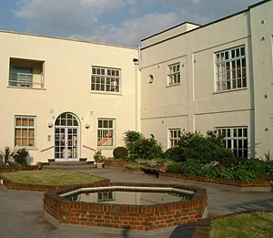

1 Bedroom Flat for Sale
The Strand Building, Hackney, London E9
£169,995 (share of freehold)
{kind=link}
{kind=link}
{kind=link}
{kind=link}
{kind=link}
{kind=link}
{kind=link}
{kind=link}
{kind=link}
As of November 2004, the property was sold.
The Strand Building is an art deco style building in Hackney, London and I'm selling my one bedroom second floor flat here. I've enjoyed living here, but it's time to move on, so now you could live here! The flat's for sale through Keatons (enter "Strand Building", without the quotes, in the Street Name box on their search page) although you can also email me, Phil Gyford, for a cheaper private sale. There is no chain.
The flat
So, what's the flat like? It's a comfortable size (approx 450 square feet) and the simple layout works well. The big windows let in plenty of light, the bedroom is wonderfully peaceful and the place just feels comfortable. The flat's in good condition with white walls and gas central heating. The rooms are:
- Reception room
- White walls and laminate wooden flooring. Two large windows. 13'6 x 11' (4.1m x 3.4m).
- Kitchen
- White walls, coloured tiles, vinyl flooring. One large window. Gas cooker, fridge, washing machine (all included), plenty of storage and worktop space. 10'6 x 8' (3.2m x 2.4m).
- Bedroom
- White walls and laminate flooring. One window facing onto the quiet courtyard. White, double-size Ikea wardrobe with frosted glass doors (included). 11'6 x 11' (3.5m x 3.4m).
- Bathroom
- White walls and rubber tiled floor. White toilet, bath and sink. Good, powerful shower attachment. 7'11 x 4'9 (2.4m x 1.6m).
- Hallway
- White walls and laminate flooring. Entryphone. 16'1 x 2'10 (4.9 x 0.9m).
Keatons have a floorplan. (Unfortunately that link will also resize your browser window, but you should be able to cope.)
The building
Not only is it a nice flat, but it's a great building. There is a gated entrance leading up to the courtyard on the first floor (shown above). The courtyard is amazingly quiet and is a peaceful place to sit, particularly when it catches the sun in the afternoon. On the ground floor is a secure, gated garage with parking and a locked bicycle store room.
The other people living here all seem nice, and I rarely hear noise from the neighbours. Most people are, I believe, freeholders, with a few leaseholders and renters. The management company is efficiently run by a small group of dedicated residents.
The location
The Strand Building is here on Streetmap, which is a convenient position. Although Hackney has no tubes I honestly haven't missed them at all. Buses leave very frequently from just around the corner and take you direct to Angel, Tottenham Court Road, Piccadilly Circus, Victoria, London Bridge and many more (search here for Hackney Baths under Stop Name for a full list of services). You're also a few minutes' walk from the Hackney Central and Hackney Downs train stations.
There's plenty of shopping close at hand. The nearby Mare Street area has plenty of shops, banks, etc. Within a few minutes' walk you have a large 24 hour Tesco, a Marks & Spencers and a Somerfield, and there are many handy "corner" shops even closer. As an added bonus Broadway Market is around 20 minutes' walk away across London Fields, and has a wonderful farmers' market every Saturday.
Kings Hall Leisure Centre is just around the corner, with a swimming pool, gym, sports hall, etc. Across the road is a doctors' surgery and just south is Sutton House, a large 16th century house, now a National Trust property. The Town Hall square on Mare Street features Hackney Central Library, the newly renovated Hackney Empire and the Ocean music venue.
Want to know more?
If you have any questions not answered here, feel free to email me, Phil Gyford. If you're interested in viewing the flat then either contact Keatons or, to save some money and keep estate agents out of the matter, just email me!